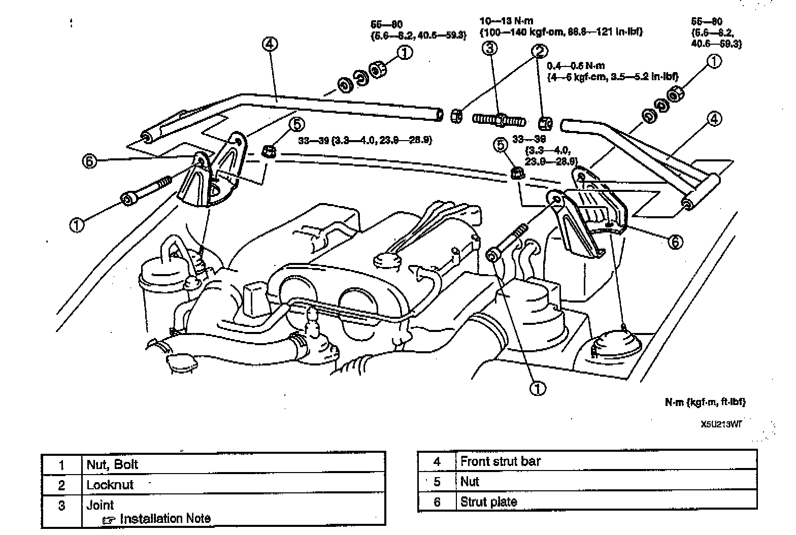
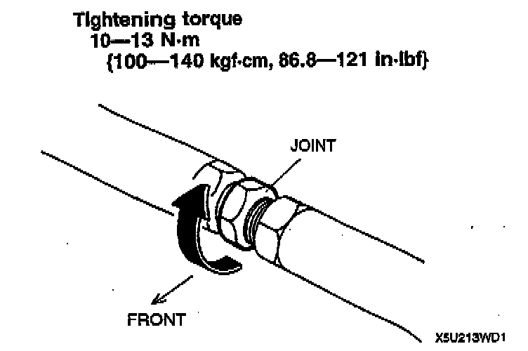

Front Strut Bar Removal/Installation
FRONT STRUT BAR REMOVAL/INSTALLATION
1. Remove in the order indicated in the table.
2. Temporarily install all component parts, then tighten in the reverse order of removal.
Joint Installation Note

- Tighten the joint in the direction shown in the figure.
Tightening torque 10-13 Nm (100-140 kg-m, 86.8-121 inch lbs.)